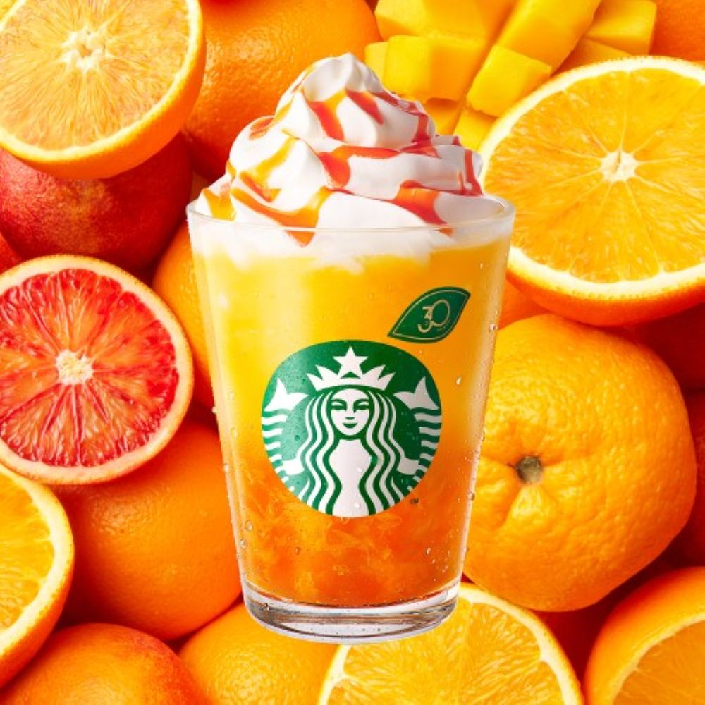
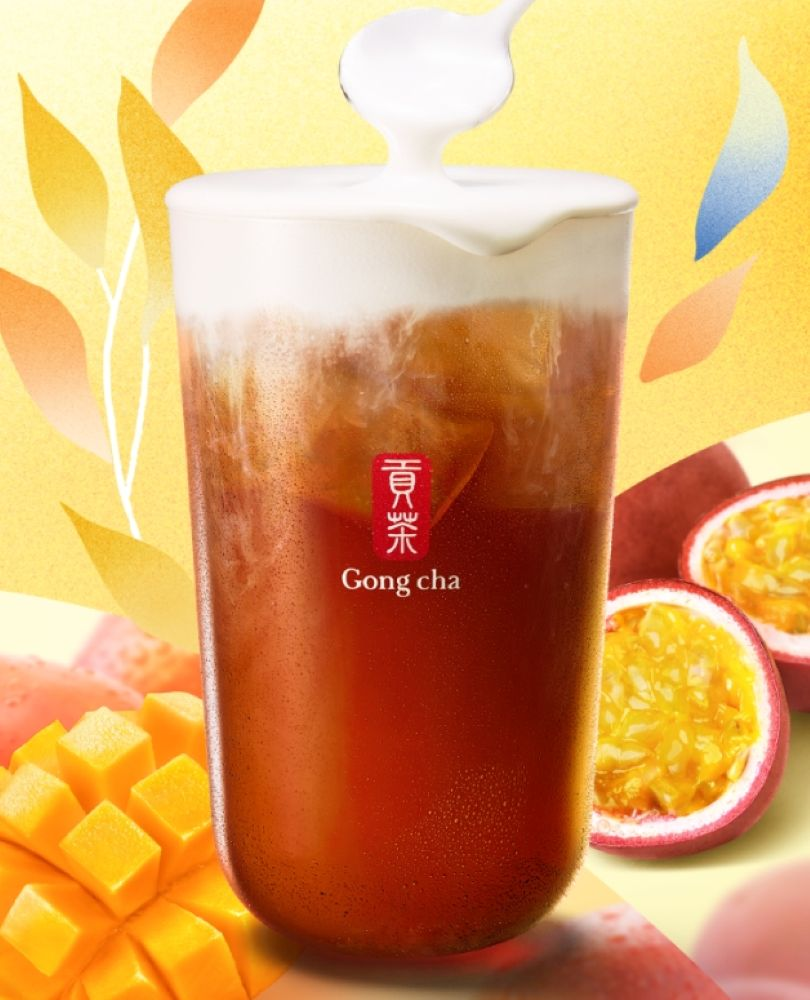
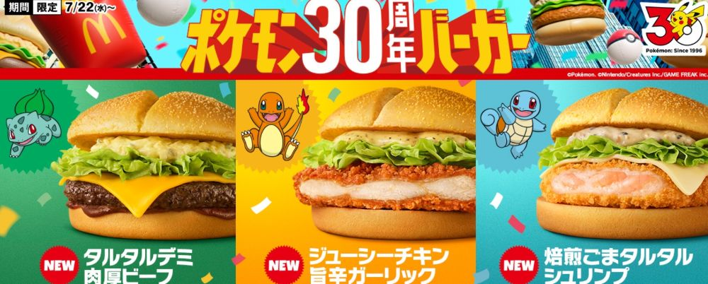

- ホーム
- >
- 限定メニュー
限定メニュー
季節限定メニュー
-

Starbucks ぎゅぎゅっとオレンジ＆マンゴー フラペチーノオレンジとマンゴーのコクとみずみずしさをぎゅっと詰め込んだフラペチーノです。
-

Gong cha マンゴー＆パッション ニルギリ紅茶柑橘を思わせるニルギリは、夏にぴったり。濃厚なマンゴーの香りとパッションフルーツのすっきりトロピカルな１杯です。
-

MacDonald's タルタルデミ肉厚ビーフ等８品(ポケモン30周年コラボ記念)ポケモン30周年記念として登場した期間限定メニューです。 バーガーやサイドメニューなど全8種類が販売されています。